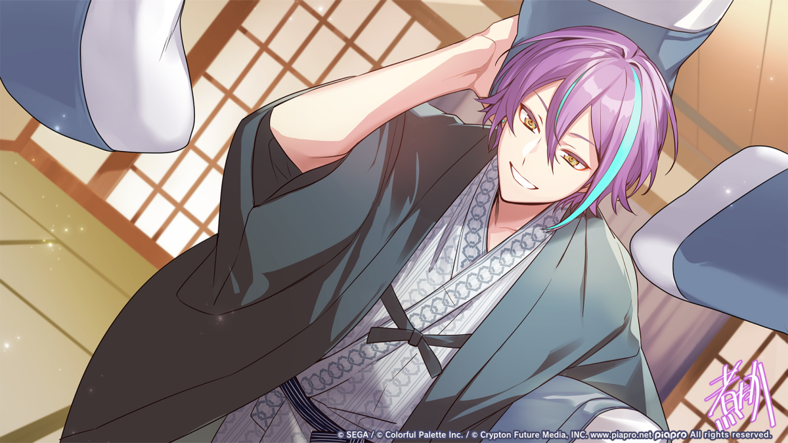
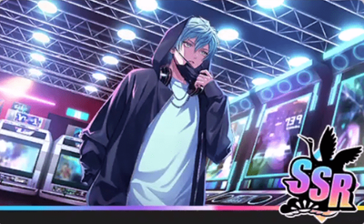
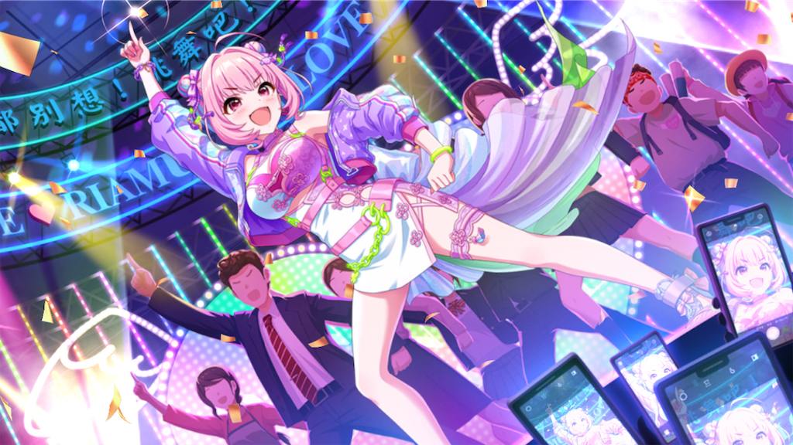
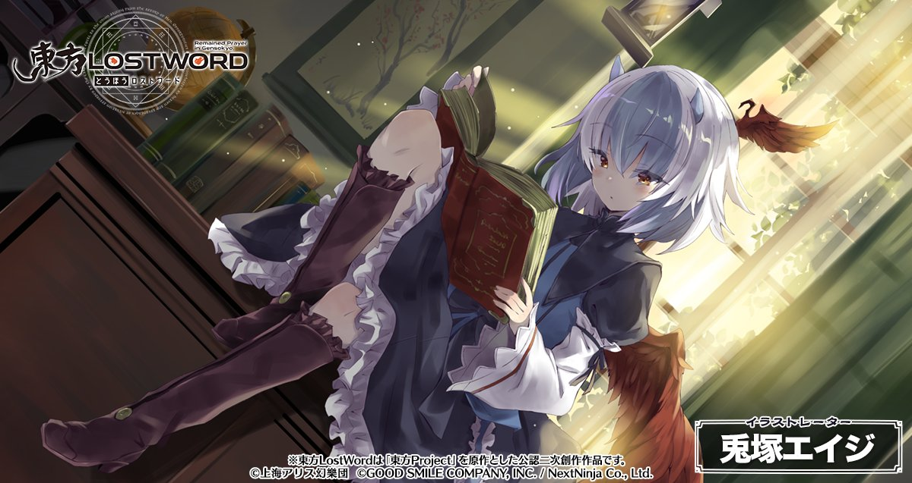
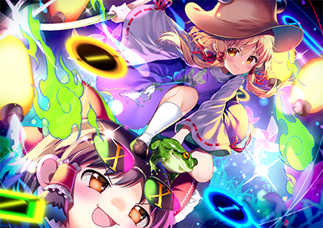
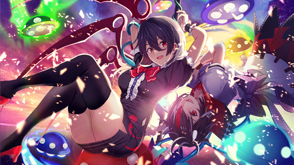
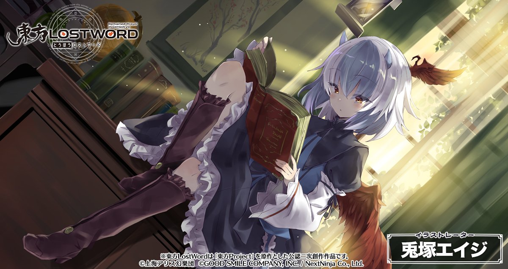
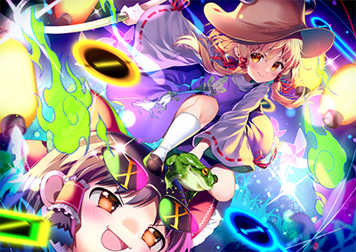
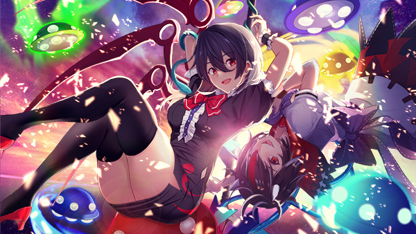

✨ その他の好きなもの紹介
プロジェクトセカイ カラフルステージ! feat. 初音ミク

ボカロ好き・音ゲー好き必見の作品ですが、 好きなオリジナル曲が少なかったため断念しました。
戦国 A LIVE

戦国武将が現代で歌うという独特な世界観の作品ですが、 サービス終了により断念しました。
学園アイドルマスター
学園を舞台にした育成作品ですが、 暇つぶし程度のプレイのため断念しました。
ワールドダイスター 夢のステラリウム
演劇がテーマの作品で楽曲は魅力的ですが、 内容が薄くなるため断念しました。
アイドルマスター シンデレラガールズ

キャラ数が非常に多く、 好きなオリジナル曲が少ないため断念しました。
東方Project
 





二次創作が非常に多く、 情報整理が難しいため断念しました。
この「その他」では、1ページ紹介ができなかった作品をまとめています。
好きなキャラクターやビジュアルを中心に掲載しています。